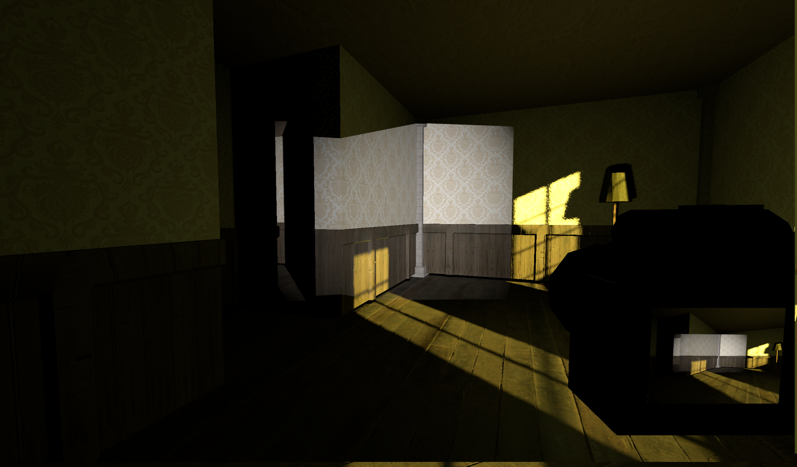
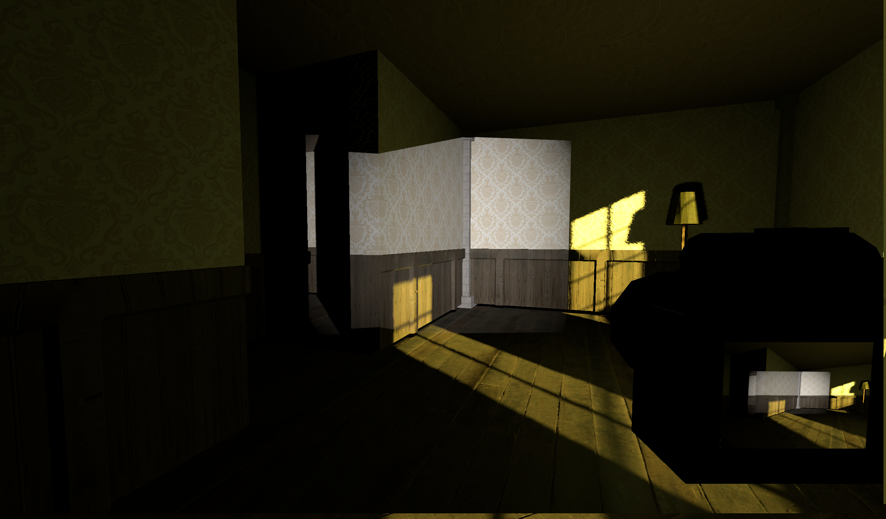

Snapshot
I organised a game jam for my MSc peers and myself during some downtime before an upcoming team project, which I entered with a team of three. We developed a first-person puzzle game built around a unique 'camera flash' mechanic.
Key Features
The game was developed in Godot to learn the engine, as none of the team had used it previously.
- Beyond organising the jam itself, I led the development for the team. I was responsible for defining scope and delegating tasks
- I designed and built the game's level, with my focus on creating a strong atmosphere. Added ambient sound, particle effects and lighting.
- I also programmed the camera and its flash mechanic, creating a flash that persists after the snapshot is taken.
The itch.io page can be found here with a working build of the game
 
